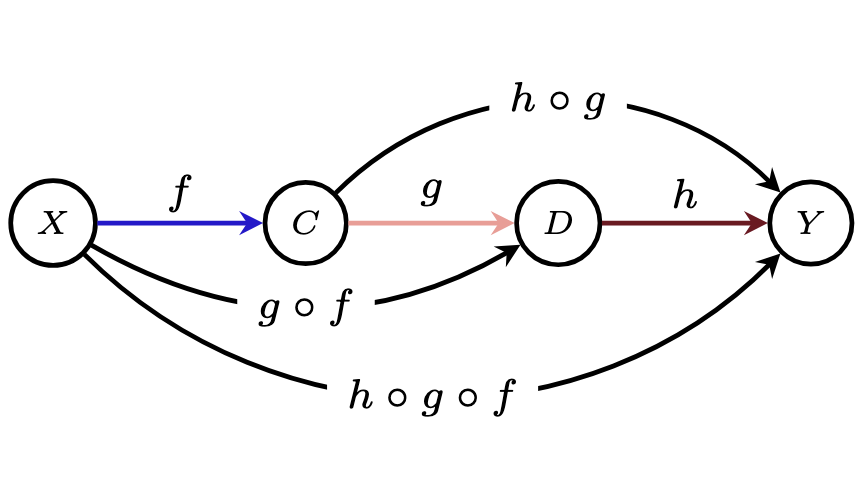
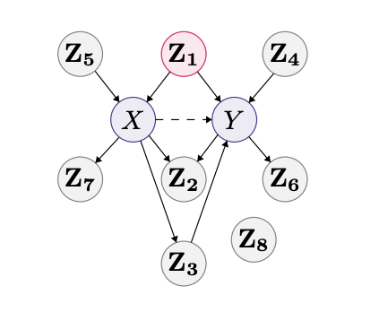

CURRENT WORK
My current research centers on the following:
A subset of my lead-author papers are highlighted below. My full bibliography is on Google Scholar.
|
|

|
Compositional Causal Reasoning Evaluation in Language Models.
J Maasch, A Hüyük, X Xu, A Nori, J González. Under review.
[tl;dr] We propose a framework for evaluating compositional causal reasoning: the ability of an agent to infer how causal measures compose and decompose.
|
|
|
AAAI 2025 Local Causal Discovery for Structural Evidence of Direct Discrimination.
J Maasch, K Gan, V Chen, A Orfanoudaki, N Akpinar, F Wang.
[tl;dr] Local structure learning facilitates causal fairness analysis in complex decision systems, as illustrated by a real-world case study on organ transplant allocation.
A preliminary version of this work was presented as an invited talk at INFORMS 2024.
arXiv
code
poster
slides
|
|

|
UAI 2024 Local Discovery by Partitioning: Polynomial-Time Causal Discovery Around Exposure-Outcome Pairs.
J Maasch, W Pan, S Gupta, V Kuleshov, K Gan, F Wang.
[tl;dr] Local causal discovery enables efficient automated covariate selection under limited prior knowledge with guarantees on correctness.
Preliminary versions were presented as a poster at the NeurIPS 2023 Causal Representation Learning Workshop and as an invited talk at POMS 2024.
arXiv
code
poster
slides
|
|
|
Cell Host&Microbe 2023 Molecular de-extinction of ancient antimicrobial peptides enabled by machine learning. J Maasch*, M Torres*, M Melo, C de la Fuente.
[tl;dr] Machine learning guides bioinspired prospection for encrypted antimicrobial peptides that display in vitro and in vivo activity with low host toxicity.
paper
code
npr
nature news
cnn
vox
|
CONTACT
Preferred contact: In general, I can be reached through LinkedIn.
Pronouns: they / them.
If you are new to non-binary pronouns, here are some examples for how to use them in a grammatical way from Merriam Webster, the MLA Style Guide, and the APA Style Guide. ☺
echo @ | sed 's/^/maasch/' | sed 's/$/cs.cornell.edu/'
|
Updated January 2025. This website was adapted by J. Maasch from this source code.
|
|
{kind=link}